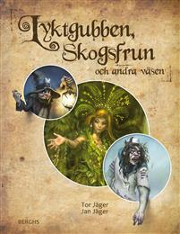
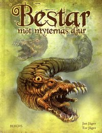
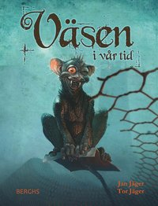

Lyktgubben, Skogsfrun och andra väsen
An exciting book for children and young adults about nordic supernatural beeings from the nordic folclore.

Bestar - möt myternas djur
The Shpinx, Centaur, Unicorn and many others: meat the most famous beasts from the mythologies in this book for children and young adults.

Väsen i vår tid
What supernatural creatures are hiding in our world of today? Explore in this colerfull book for children and young adults.